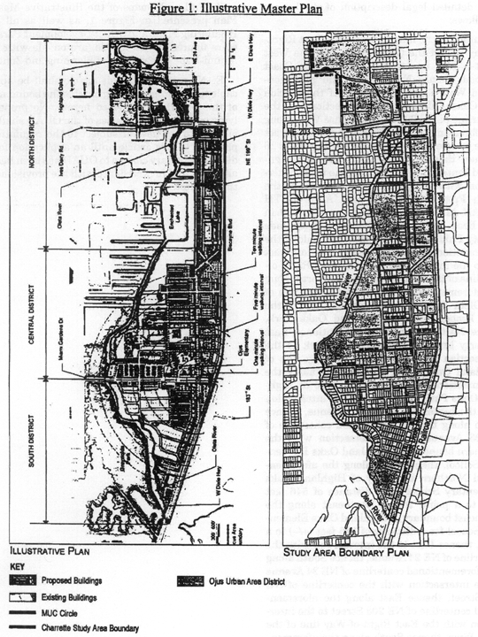

ARTICLE XXXIII(O).
Sec. 33-284.99.14. Purpose, intent and applicability.
Sec. 33-284.99.15. Ojus Urban Area District (OUAD) Requirements.
Sec. 33-284.99.18. The Regulating Plans.
Sec. 33-284.99.19. Building Placement and Street Type Development Parameters.
Sec. 33-284.99.20. General Requirements.
Sec. 33-284.99.21. Conflicts with other Chapters and Regulations.
Sec. 33-284.99.22. Non-conforming Structures, Uses, and Occupancies.
Sec. 33-284.99.14.
A.
The regulations contained in this chapter and Chapter 18A, Landscape Code, Code of Miami-Dade County, Florida, shall apply to this article, except as otherwise added to or modified herein.
B.
The Illustrative Master Plan (Figure 1), illustrates the citizens' vision and may be used to interpret this article. Where the Illustrative Master Plan conflicts with the text of this article, the text shall govern.
C.
The regulations contained in this chapter address portions of the Ojus/Aventura Metropolitan Urban Center and its surrounding area. Specifically it addresses an area with the boundaries shown in the Boundary Plan, hereafter the Ojus Urban Area District (OUAD) and generally described as follows: from the crossing of the Oleta River with the west side of the Florida East Cost (FEC) railroad easement, then north along the west side of the FEC railroad easement to the south side of NE 203 Street, then west along the south side of NE 203 Street to the west side of NE 26 Avenue, then north along the west side of NE 26 Avenue to the south side of theoretical NE 206 Street then west along the south side of theoretical NE 206 Street to the eastern boundary of the Highland Oaks Park, then north and west along the boundary of Highland Oaks Park to the east side of NE 23 Avenue, then south on the east side of NE 23 Avenue to the north side of NE 207 Street, then east along the north side of NE 207 Street to the east side of NE 24 Avenue, then south along the east side of NE 24 Avenue to the south side on NE 203 Street, then east along the south side of NE 203 Street to the Oleta River, then south along the Oleta River to the point of beginning.
A more detailed legal description of the boundaries follows:
Beginning at the intersection of the East Right-of-Way line of the Oleta River with the West Right-of-Way line of the Florida East Coast railroad, thence North along the aforementioned West Right-of-Way line of the Florida East Coast railroad to the intersection with the centerline of NE 203 Street, thence West along the aforementioned centerline of NE 203 Street to the intersection with the centerline of NE 26 Avenue, thence North along the aforementioned centerline of NE 26 Avenue to the intersection with the theoretical extension of the North Property line of Tract "A" of BETH TORAH ADATH YESHURUN as recorded in Plat Book 147, Page 50 of the Miami-Dade County Public Records, thence West along the aforementioned North Property line of Tract "A" to the intersection with the East Right-of-Way line of the Oleta River, thence North along the aforementioned East Right-of-Way line of the Oleta River to the intersection with the East Property line of Highland Oaks Park, thence North along the aforementioned East Property line of Highland Oaks Park to the intersection with the North Property line of Highland Oaks Park, thence West along the aforementioned North Property line of Highland Oaks Park to the theoretical intersection with the centerline of NE 23 Avenue, thence South along the aforementioned centerline of NE 23 Avenue to the intersection with the Northern boundary of Highland Oaks Elementary School, thence East along the aforementioned Northern boundary of Highland Oaks Elementary School for a distance of 546 feet (+/-) to a point, thence Southeast along the Northeast boundary of Highland Oaks Elementary School for a distance of 125 feet (+/-) to a point, thence East to the intersection with the centerline of NE 24 Avenue, thence South along the aforementioned centerline of NE 24 Avenue to the intersection with the centerline of NE 203 Street, thence East along the aforementioned centerline of NE 203 Street to the intersection with the East Right-of-Way line of the Oleta River, thence South along the aforementioned East Right-of-Way line of the Oleta River to the Point of Beginning.
D.
Full scale maps of the Illustrative Master Plan presented in Figure 1, as well as all the Regulating Plans and Street Development Parameters figures in this article, are on file with the Miami-Dade Department of Planning and Zoning.
E.
No provision in this article shall be applicable to any property lying outside the boundaries of the OUAD as described herein. No property lying within the boundaries of the OUAD shall be entitled to the uses or subject to the regulations provided in this article until an application for a district boundary change to OUAD has been heard and approved in accordance with the provisions of this chapter.

Figure 1: Illustrative Master Plan
(Ord. No. 06-86, § 1, 6-6-06)
Sec. 33-284.99.15.
Except as provided herein, all developments within the OUAD shall comply with the requirements provided in Article XXXIII(K), Standard Urban Center District Regulations, of this code.
(Ord. No. 06-86, § 2, 6-6-06)
Editor's note—
Section 1 of Ord. No. 07-94, adopted July 10, 2007, deleted § 33-284.99.16, which pertained to definitions and derived from Ord. No. 06-86, adopted June 6, 2006.
Except as provided herein, all permitted, conditionally permitted, and temporary uses within the OUAD shall comply with Section 33-284.83 of this Code.
1.
As provided in the Land Use Regulating Plan, no duplexes shall be permitted in areas designated:
a.
Residential (R) with a maximum permitted density of 6 dwelling units per net acre; and
b.
Residential Modified (RM) with maximum permitted densities greater or equal to 36 units per net acre.
2.
No municipal recreation building, playground, or park owned and operated by a municipality, county, state, or the federal government shall be permitted in areas designated R on the Land Use Regulating Plan.
3.
No civic uses shall be permitted in areas designated R on the Land Use Regulating Plan, except for educational facilities on properties not to exceed 5 acres.
4.
Industrial uses. Notwithstanding the provisions of Section 33-284.83 (A)(4), only the following uses shall be permitted in the Industrial District (ID) area. These uses shall be allowed in conformance with the Land Use Regulating Plan and the Street Type Development Parameters.
a.
All uses permitted in the IU-1 zoning district
b.
All uses permitted in the IU-2 zoning district after public hearing pursuant to Section 33-311(A)(3) of this code.
c.
MC uses at a maximum density of 52 units net acre or at a maximum density of 60 units per net acre with the purchase of the appropriate number of Severable Use Rights pursuant to Sections 33B-41 to 33B-47 of this code.
d.
live-work units as provided in Sec. 33-284.83(A)(4)(b).
e.
On lots fronting West Dixie Highway and south of NE 195 Street, all uses permitted in the Mixed Use Main Street (MM), at a minimum density of 12 units per net acre and at a maximum density of 52 units net acre, or a maximum density of 60 units per net acre with the purchase of the appropriate number of Severable Use Rights as permitted by Section 33B-41 to Section 33B-47 of this code.
f.
On lots fronting NE 26th Avenue, all uses permitted in the Residential Modified (RM), at a minimum density of 12 units per net acre and a maximum density of 36 units net acre.
5.
Institutional uses. The following additional uses shall be permitted in the Institutional (I) area in accordance with the Land Use Regulating Plan and the Street Types Development Parameters.
a.
Civic uses in accordance with the Street Types Development Parameters.
b.
On lots located west of NE 25th Avenue, all uses permitted in the Residential (R), with a minimum density of 6 units per net acre and a maximum density of 13 units per net acre.
c.
On lots located east of NE 25th Avenue, all uses permitted in the Residential Modified (RM), with a minimum density of 12 units per net acre and a maximum density of 36 units per net acre.
6.
Conditionally Permitted Uses. Notwithstanding the provisions of Section 33-284.83 (B), only the following conditional uses shall be permitted subject to the administrative approval of a site plan, pursuant to Section 33-284.88 of this code.
1.
Liquor package stores shall be permitted only in the Core Sub-district and only in compliance with all applicable regulations of this code.
(Ord. No. 06-86, § 4, 6-6-06; Ord. No. 07-94, § 2, 7-10-07)
Sec. 33-284.99.18.
The Regulating Plans shall consist of the following controlling plans, as defined and graphically depicted in this section.
A.
The Street Types Plan, which establishes a hierarchy of street types in existing and future locations. The five Street Types and the hierarchy of streets (from most important to least important in accommodating all types of activity) are U.S. 1, Main Street, Boulevard, Minor Street, and Service Road.
B.
The Sub-districts Plan, which delineates 3 Sub-districts: Core, Center and Edge. These Sub-districts shall regulate the allowable intensity of development in accordance with the Comprehensive Development Master Plan and this article.
C.
The Land Use Plan, which delineates the areas where specified land uses and development of various types and intensities shall be permitted.
D.
The Building Heights Plan, which establishes the minimum and maximum allowable number of stories.
E.
The Designated Open Space Plan, which designates open spaces. The designated open spaces shall be controlled by anchor points.
F.
The New Streets Plan, which shows the location and the number of new streets needed to create the prescribed network of streets within the Ojus Urban Area. All new A streets shall be required in the same general location as shown on the New Streets Plan. All B streets shall be located as provided in Section 33-284.86(F) of this code.
G.
The Bike Route Plan, which depicts the designated bike routes, including the bike facility requirements if any, which shall be shown in all development plans.
Street Types Plan
Sub-Districts Plan
Land Use Plan
Building Heights Plan
Designated Open Space Plan
New Streets Plan
Bike Route Plan
(Ord. No. 06-86, § 5, 6-6-06; Ord. No. 07-94, § 3, 7-10-07)
Sec. 33-284.99.19.
A.
All new development and redevelopment within the OUAD shall comply with the Building Placement and Design Parameters as provided in Section 33-284.85 of this code.
B.
All new development and redevelopment within the OUAD shall comply with the Street Type Parameters as provided herein:
| Street type | Minimum Required Configuration |
| Main Street | As provided herein |
| Boulevard (NE 26th Avenue) | As provided herein |
| Boulevard | As provided in Section 33-284.85 |
| Minor Street | As provided herein or in Section 33-284.85 |
| Service Road | As provided in Section 33-284.85 |
| Pedestrian Passage | As provided in Section 33-284.85 |
C.
Unless otherwise provided by the Building Placement and Design Parameters in Section 33-284.85 of this code, the following front and side street setbacks shall be required for mixed-use/industrial buildings located in areas designated as MM, MC and ID within the OUAD:
| Street Type | Required Setback | ||
| Core | Center | Edge | |
| Main Street | 0' * or 12' | N/A | N/A |
| Boulevard (NE 26 Avenue) | N/A | 0' or 10' | 10' or 15' |
| Boulevard (Other) | 0' | 0' or 10' | 10' or 15' |
| Minor Street | 0' or 10' | 0' or 10' | 10' Or 15' |
|
Note: * 12' colonnade required when setback is 0' ** as provided in Section 33-284.99.19 of this code N/A not applicable |
|||
Main Street (West Dixie Hwy/NE 26th Ave) Core

Boulevard (NE 26th Ave) Core/Center
Boulevard (NE 26th Ave) Edge
Minor Street (No Sidewalk) Edge
(Ord. No. 06-86, § 6, 6-6-06; Ord. No. 07-94, § 4, 7-10-07)
Sec. 33-284.99.20.
In addition to the requirements in Section 33-284.86 of this code, and to retain the character of the development within the OUAD, all new development and redevelopment shall comply with the following:
A.
Heights of Buildings.
1.
Except where exempted as depicted on the Building Heights Plan, where a proposed development abuts an area designated Residential (R) on the Land Use Regulating Plan, the height of the proposed development along the abutting property line, for a minimum depth of 50 feet, shall be no greater than the maximum height allowed in the abutting area designated R. Examples of the required height transition are shown herein.
Example of Building Heights Transition from Mixed-Use to Single-Family
Each story shall have a maximum height of 16 feet, as measured from floor to floor. Any height above 16 feet shall count as an additional story, except that a single story may have a maximum height of 30 feet, provided that no mezzanine area intended for commercial use exceeds 10 percent and no mezzanine area intended for residential use exceeds 80 percent of the floor area of that story.
B.
Architectural Guidelines.
To retain the character of the development in the OUAD area and to recognize its architectural history, all new single-family development within the OUAD area shall conform with either the Florida Vernacular or the Mission style as shown in the figures below. Specifically and at a minimum, all new single-family homes within the area shall include each of the required elements, respective to the chosen architectural style, described herein:
| Architectural Style | Required elements |
| Florida Vernacular | 1. Side gabled roof with shingles and a slope of 6:12 or 12:12 2. Operable, boarded shutters sized to the window opening 3. Attached front porch |
| Mission | 1. Shaped Mission dormer or roof parapet 2. Arched openings 3. Overhanging eaves with exposed rafters. Additional defining elements are shown in the figures provided herein, and shall be optional. |
Florida Vernacular
Florida Vernacular (Windows, Doors, Railings/Balustrades)
Florida Vernacular (Columns, Posts, Piers)
Mission Style
Mission Style (Windows, Dormers, Parapets)
(Ord. No. 06-86, § 7, 6-6-06)
Sec. 33-284.99.21.
This article shall govern in the event of conflicts with other zoning, subdivision, or landscape regulations of this code, or with the Miami-Dade Department of Public Works Manual of Public Works.
(Ord. No. 06-86, § 8, 6-6-06)
Sec. 33-284.99.22.
Nothing contained in this article shall be deemed or construed to prohibit a continuation of a legal nonconforming structure, use, or occupancy in the OUAD that either (1) was existing as of the date of the district boundary change on the property to OUAD or (2) on or before said date, had received final site plan approval through a public hearing pursuant to this chapter or through administrative site plan review or had a valid building permit. However, any structure, use, or occupancy in the OUAD that is discontinued for a period of at least six months, or is superseded by a lawful structure, use or occupancy permitted under this chapter, or that incurs damage to the roof or structure to an extent of 50 percent or more of its market value, shall be subject to Section 33-35(c) of this code. However, a lawfully existing single-family home use that is discontinued for a period of at least six months or that incurs damage to the roof or structure to an extent of 50 percent or more of its market value, shall not be subject to Section 33-35(c) of this code.
(Ord. No. 06-86, § 9, 6-6-06)